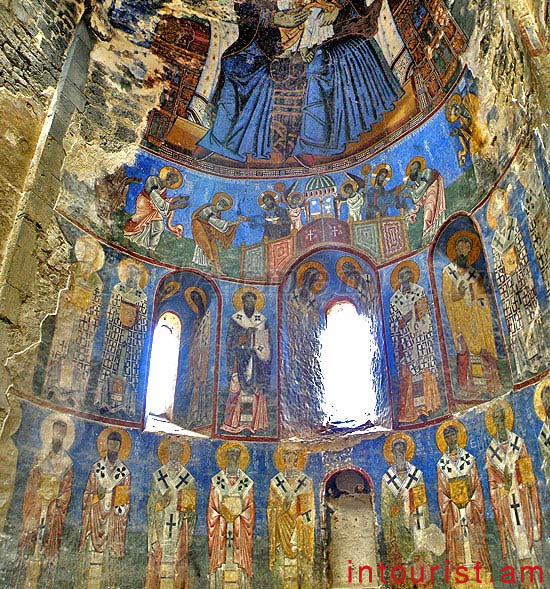

ԵԿԵՂԵՑԻՆԵՐ և ՎԱՆՔԵՐ
ՍԱՆԱՀԻՆ ՎԱՆԱԿԱՆ ՀԱՄԱԼԻՐ
Սանահինի վանքը գտնվում է Դեբեդ գետի աջ ափին` Լոռու կանաչապատ անկյուններից մեկում: Ճարտարապետական այս բարդ համակառույցը բաղկացած է մի քանի եկեղեցիներից, գրադարան-մատենադարանից, դպրանոցից: Առանձին հիացմունք է առաջացնում Սբ. Աստվածածին եւ Ամենափրկիչ եկեղեցիներն իրար կապող ճեմարանի շենքը, որն ի սկզբանե եղել է ճարտարապետների հմուտ հնարքը, որով նրանք այս երկու եկեղեցիներին հաղորդել են բարձր սեյսմակայունություն:
Վանական համալիրի առաջին՝ Սուրբ Աստվածածին եկեղեցին կառուցվել է 10-րդ դարի 30-40-ական թվականներին (Աբաս Ա Բագրատունի թագավորի օրոք)։ 966 թվականին Աշոտ Գ Ողորմած թագավորն ու Խոսրովանույշ թագուհին կառուցել են Սուրբ Ամենափրկիչ եկեղեցին՝ իրենց որդիներ Կյուրիկեի (Գուրգենի) և Սմբատի արևշատության համար[4], հիմնադրել են միաբանություն և բարձրագույն կարգի հոգևոր դպրոց, հրավիրել եկեղեցականներ, գիտնական վարդապետներ, գրիչներ։
ՀԱՂՊԱՏ ՎԱՆԱԿԱՆ ՀԱՄԱԼԻՐ
Հաղպատ վանական համալիրը գտնվում է Լոռու մարզի համանուն գյուղում՝ Դեբեդ գետի աջակողմյան բարձրադիր լեռնահարթակի վրա: 10-13-րդ դարերում համարվում էր Հայաստանի խոշորագույն հոգևոր-մշակութային և գիտակրթական կենտրոններից մեկը: Հաղպատ և Սանահին վանական համալիրները համարվում են ՅՈՒՆԵՍԿՕ-ի համաշխարհային ժառանգության օբյեկտ:
Վանքը բազմիցս վերանորոգվել է և շրջապատված է պարսպով: Այն իր մեջ ներառում է հետևյալ կառույցները՝ Սբ. Նշան եկեղեցին իր գավիթով, մյուս երկու եկեղեցիները՝ Սբ. Գրիգորը և Սբ. Աստվածածինը: Բացի այդ գրատուն-մատենադարանը, Համազասպի ժամատունը, զանգակատունն ու սեղանատունը: Վանական համալիրի մասն են կազմում նաև երեք՝ խաչքարերով պսակված մատուռները, երկու տնտեսական շենքերն ու միջանցքները (փոքր գավիթները): Հաղպատ վանական համալիրի մասին մեզ հասած տեղեկությունները, հիմնականում հանդիպում են Սանահին վանական համալիրի հետ միասին: Պատճառներն ավելի քան տրամաբանական են, քանի որ վանքերն ունեն նույն ժամանակագրությունն ու գտնվում են միմյան շատ մոտ: Պատմիչ Ասողիկը, ով ժամանակագրական առումով ամենամոտն է կանգնած վանքի հիմնադրմանը, վկայում է՝ թե՛ Սանահինը, թե՛ Հաղպատը կառուցել է Աշոտ Ողորմածը: Երկու համալիրների հիմնադրման մասին կարծիքներն իրարամերժ են:
ԱԽԹԱԼԱ ՎԱՆԱԿԱՆ ՀԱՄԱԼԻՐ
Սուրբ Աստվածածին եկեղեցու պատերը նկարազարդված են հոյակապ, հրաշալի պահպանված որմնանկարներով։ Որմնանկարները կատարվել են 13-րդ դարում, երբ եկեղեցին վերափոխվեց քաղկեդոնականի։ Որմնանկարներն իրենց գունային լուծումներով մոտենում են բյուզանդականին, սակայն թեմաների ընտրությունը զուտ հայկական է։
Ներկայումս Ախթալայի վանքն ունի ուխտագնացության օրեր՝ սեպտեմբերի 20-21։
Եկեղեցու որմնանկարների ստորին շերտը վերաբերում է 11-րդ դարին։ Գունազարդումը բնորոշ է բյուզանդական արվեստին, իսկ թեմատիկ լուծումները՝ հայկական մանրանկարչությանը։ Իսկ XIII դարում և հետո կատարված որմնանկարները հարազատ են բյուզանդական արվեստին։ Դրանց մեծ մասն ունի հունարեն, մի մասն էլ՝ վրացերեն արձանագրություններ։ Երկշերտ բարձրարվեստ որմնանկարները պատկերում են Հին և Նոր կտակարանների առանձին դրվագներ, սրբերի պատկերներ, այդ թվում՝ և Գրիգոր Լուսավորչի պատկերը։ Խորանի գմբեթարդին Մարիամ Աստվածածինն է՝ գահին նստած, մանուկ Հիսուսը գրկին. (պահպանվել է որմնանկարի միայն մի մասը), նրանից ներքև հաղորդության՝ խորհրդավոր ընթրիքի տեսարանն է։ Հիսուսը պատկերված է երկու անգամ՝ մերթ շրջված դեպի աջ և մերթ դեպի ձախ՝ առաքյալների հետ հացը կիսելիս։

ՕՁՈՒՆԻ ՎԱՆՔ
Օձունի գմբեթավոր բազիլիկ եկեղեցին գտնվում է գյուղի կենտրոնական բարձրադիր մասում։ Արևելքից արևմուտք ձգված ուղանկյուն հատակագծով գմբեթավոր բազիլիկ է՝ կիսաշրջանաձև խորանին կից երկհարկ ավանդատներով, արտաքին կամարաշար սրահով։ Աղոթասրահը ուղղանկյուն դահլիճ է՝ երկշար մույթերով բաժանված երեք նավերի։ Արտաքին սրահը երեք կողմերից եզերում է աղոթասրահը։
Եկեղեցին վաղ միջնադարյան եզակի կառույցներից է, որտեղ համեմատաբար ամբողջականորեն է պահպանվել արտաքին սրահը, որի շնորհիվ մեծացել է եկեղեցու ընդհանուր ծավալը։ Աչքի է ընկնում 6-7-րդ դդ. Վաղ քրիստոնեական արվեստին բնորոշ պատկերաքանդակների և զարդաքանդակների բազմազանությամբ, որոնք կիրառված են չափի բացառիկ զգացումով։ Եկեղեցու արտաքին և ներքին պատերին կան բազմաթիվ հայերեն արձանագրություններ։
Եկեղեցին բազմիցս նորոգվել է, ինչի մասին հիշատակություններ են պահպանվել եկեղեցու բակում գտնվող տապանաքարերի վրա (801 թ., 1888 թ.)։ 19-րդ դ. վերջերին թիֆլիսաբնակ Զաքարիա և Բաղդասար Աբովյան եղբայրները իրենց նյութական միջոցներով վերանորոգել են եկեղեցին և շրջապարիսպը, ինչը վկայող արձանագրություններ կան եկեղեցու հյուսիսարևելյան գմբեթակիր մույթի արևմտյան կողմում ամրացված սալի և իրենց մոր՝ Եղիսաբեթի տապանաքարի վրա։